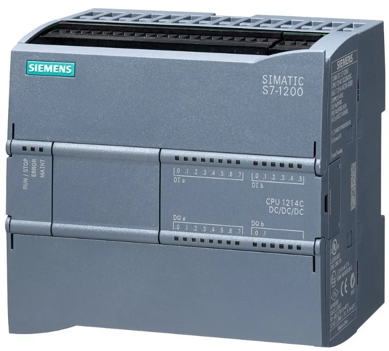

O que é Arduíno?
Em termos simples, o Arduíno é uma plataforma de prototipagem eletrônica de código aberto. Ele funciona como um "cérebro" programável para os seus projetos.
Essa plataforma é composta por duas partes principais, sendo elas: Hardware e Software

Hardware: Ele é o "corpo" da máquina, que é a placa de circuito na qual é projetada para ser resistente e fácil de conectar. Imagine que ela é uma central de distribuição de energia e dados.
O Microcontrolador: o componente principal é um chip preto (geralmente o ATmega328P no modelo Uno).
Diferente do processador de um computador, que precisa lidar com internet, vídeo e teclado ao mesmo tempo, este chip é focado. Ele possui sua própria memória interna para guardar o programa que você enviou e executá-lo linha por linha, sem interrupções.
Software: Ele é dividido em duas partes: onde você escreve (IDE) e a linguagem que você usa.
O Arduíno IDE: ele é o programa que você instala em seu computador. Ele serve como um editor de texto especializado. É nele que você escreve as ordens para a placa. Ele possui um botão mágico chamado "Upload", que faz a ponte: ele pega o texto que você escrever, traduz para códigos binários e "injeta" isso dentro do chip da placa via USB.
Entrada Digital e Analógica do Arduíno
Para entender como o Arduíno interage com o mundo, imagine que os Pinos de Entrada são os "sentidos" da placa. Assim como nót temos o tato e a visão, o Arduíno usa eletricidade para entender o que está acontecendo ao redor.
Entrada Digital: ela é mais simples, já que só entende dois estados extremos. No Arduíno, isso é traduzido como HIGH e LOW, onde
HIGH (Alto): Presença de 5 volts (Ligado).
LOW (Baixo): Presença de 0 volts (Desligado).
Entrada Analógica: A parte de entrada analógica é diferente do que a digital, ela é mais como o mundo real, que raramente é só "ligado ou desligado". Por exemplo, a temperatura não pula de 1-°C para 40°C num clique; ela passa por TODOS os valores intermediários. E é aqui que entram as Entradas Analógicas (marcadas com um A na placa, como A0, A1...).
Esses pinos podem medir a voltagem exata que chega neles. O Aruíno transforma essa voltagem (que vai de 0V a 5V) em um número que vai de 0 a 1023.
O que é o CLP
O CLP é, essencialmente, um computador industrial.
Diferente do seu notebook ou celular, ele não foi feito para rodar jogos ou navegar pela internet. Ele foi projetado para resistir a ambientes hostis (poeira, calor, vibrações e ruídos eletromagnéticos) e para tomar decisões em milissegundos.
Sua função principal é monitorar entradas e controlar saídas.

As entradas são os "sentidos" do CLP. Ele recebe sinais de sensores (presença, temperatura, pressão) e botões.
As saídas então são as "ações" do CLP. Ele envia comandos para ligar motores, abrir válvular, acender luzes de aviso ou mover braços robóticos.